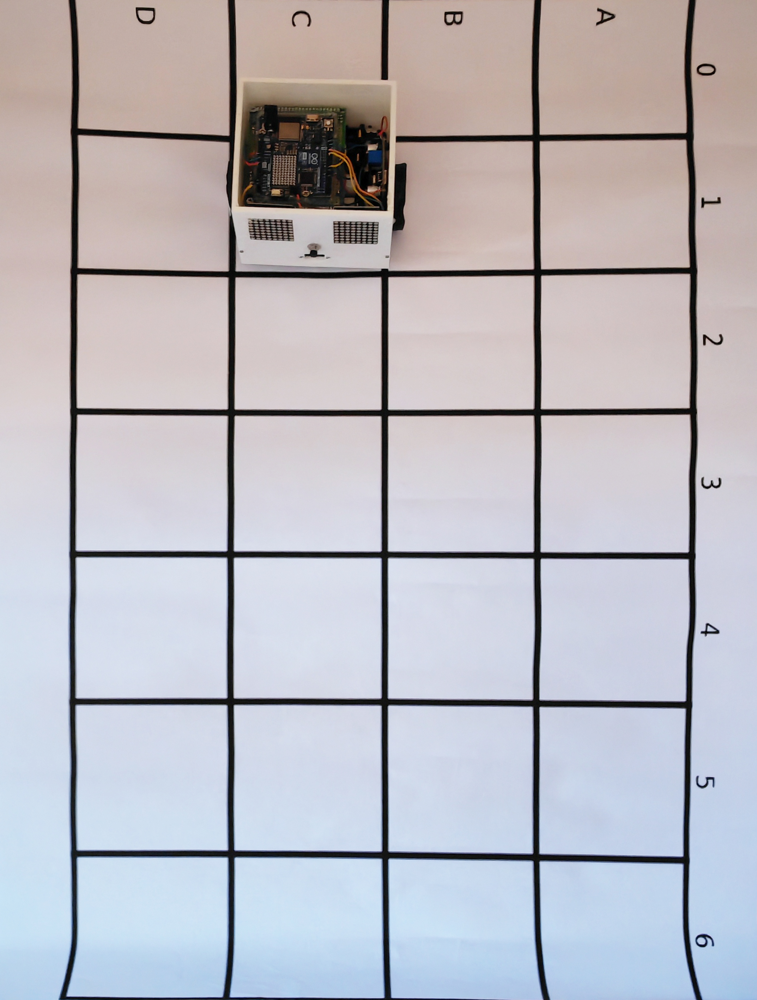
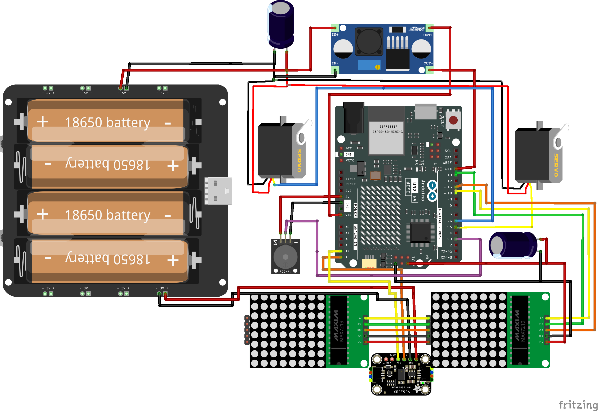

Un proiect născut din empatie, creat să ofere copiilor instituționalizați o unealtă tangibilă pentru dezvoltarea gândirii critice.
A project born from empathy, created to give institutionalized children a tool for critical thinking.
Copilul ghidează robotul de la A la B. Dacă întâlnește un obstacol fizic, robotul se oprește. Este momentul în care cel mic trebuie să recalculeze traseul.
The child guides the robot from A to B. If it hits an obstacle, the robot stops. The child must then rethink the path.

Deoarece Flutter nu suportă nativ Blockly, am integrat acest WebView care comunică bidirecțional cu aplicația și robotul.
Since Flutter doesn't natively support Blockly, I've integrated this WebView for real-time communication.
💡 Click o singură dată pe telefon pentru a activa simulatorul.
💡 Click once on the phone to activate the simulator.
De la schema Fritzing până la modelul proiectat 3D, totul este transparent pentru a încuraja învățarea.
From the Fritzing schema to the 3D model, everything is transparent to encourage learning.

Vezi cum comenzile digitale se transformă în mișcare fizică instantanee pe suprafața de parchet.
Watch digital commands transform into instant physical movement on the wooden floor.
Pornirea robotului marchează începutul unei noi aventuri educaționale.
Powering up the robot marks the start of a new educational adventure.